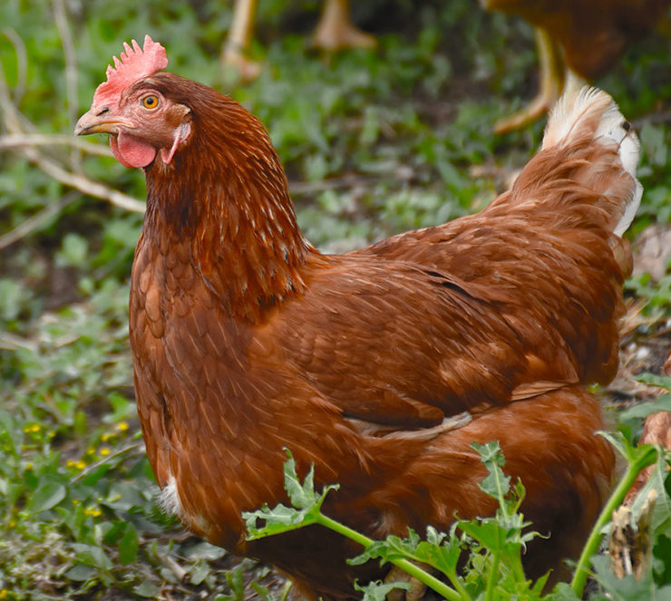
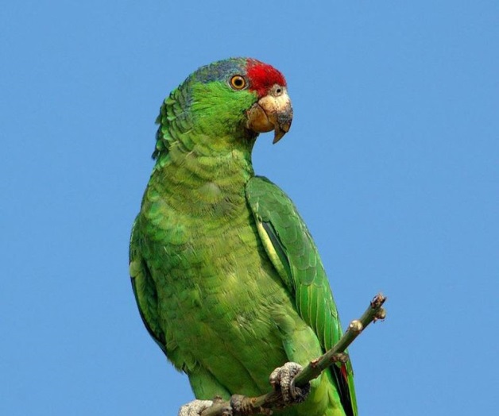

Animales oviparo
Los animales ovíparos son aquellos que nacen de un huevo, por ejemplo: pollos, tortugas, gallinas, avestruces, pájaros, patos, cocodrilo, tiburón, guacamaya, pavorreal, peces, dinosaurios, sapos, insectos, cangrejos, serpientes, entre otros
El huevo está formado por la yema, la clara, las membranas y el cascarón. El embrión, o sea el nuevo ser, se desarrolla en la yema, pero para que esto suceda tiene que estar fecundado por el macho. No todos los huevos son iguales, varían de tamaño, color y forma según la especie. En el caso de las aves, el más grande es el del avestruz y el más pequeño el del colibrí o picaflor.
Biografias de animales oviparos
Cocodrilo

Gallina
Loro
